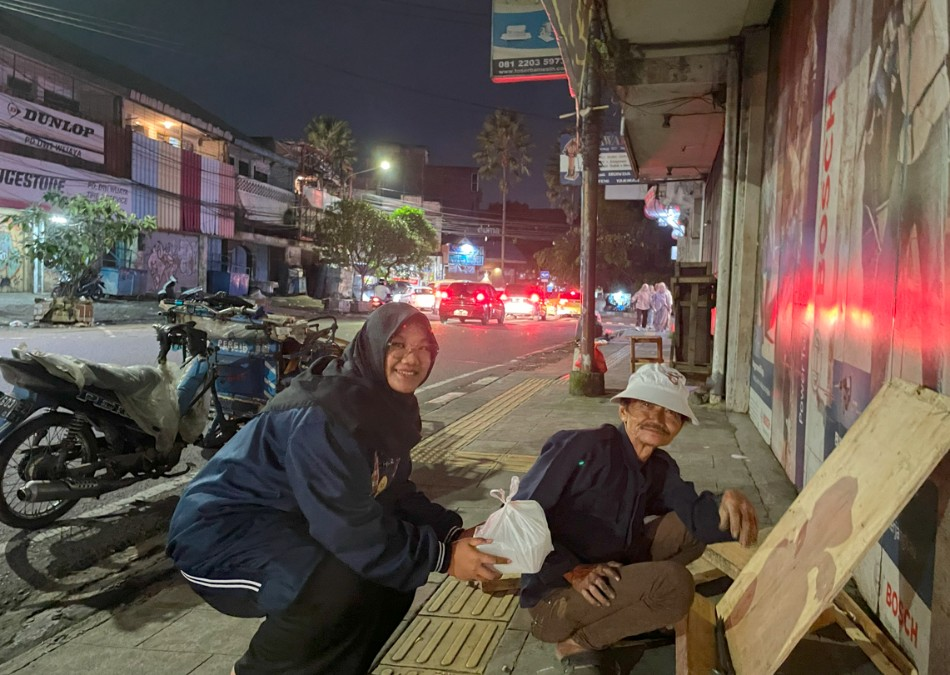
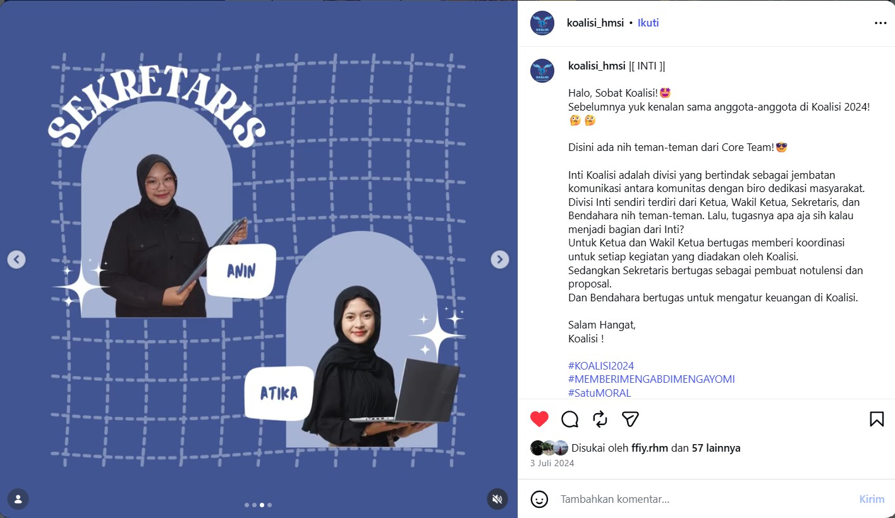

01 / ROLE OVERVIEW
How I contributed
Supported the community secretariat by maintaining member information, documenting meetings, and preparing program planning material.
02 / RESPONSIBILITIES & CONTRIBUTIONS
Roles across the organization
01June - December 2024
First Secretary
- Compiled a list of 30+ KOALISI members.
- Recorded minutes for major meetings and core-coordinator meetings.
- Prepared a work program proposal.
03 / ORGANIZATIONAL IMPACT
From coordination to continuity
Across the role period, the work supported reliable coordination through clear records, shared planning, and follow-through on responsibilities. The details above reflect the duties described in the supplied experience materials.
04 / DOCUMENTATION
Snapshots from the Experience
Selected photos and materials from my organization activities.


SKILLS DEMONSTRATED
SecretariatMeeting DocumentationMember RecordsProgram Planning